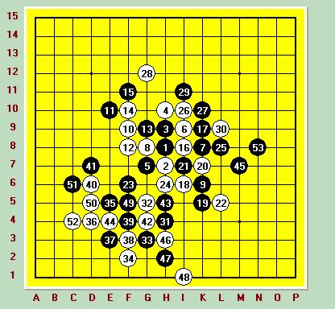

全国赛小结
#1 全国赛小结 作者：菰独 发表时间：2007-10-11 17:52:58
一直觉得，全国赛是很遥远的事情，也从未想去参加，只是从包包和小丸浙江赛回来之后，看了他们的博客才对比赛比较渴望，而且老蔡和包包也一直建议我多参加些比赛，多积累些经验，所以8月底就开始准备这次全国赛了。不过，9月23的聚会中，大家都表示不准备参加这次全国赛，我也就放弃了，我可不想一个人去哈。然后就到了9月28，江阴的小丸突然打电话来说他要去天津做技术支持，问我要不要去参加全国赛，我说好啊，：）这次的旅程就这么开始了。
9月2号那天下午，坐车到无锡和小丸一起火车去天津。这里要特别感谢丸子，买车票定房间等事情都是他一手包办的，我都没出什么力。。晚上10点钟的时候我们比较累，补了卧铺票，不然坐到天津，第2天就没法比赛了，不过是上铺，汗哈。。。。由于本人体格强壮，上铺的空间实在是太。。。。结果翻来覆去到了1点钟还没睡得着，然后就开始担心明天的比赛了，害怕自己输的一塌糊涂。（PS：这次出去比赛，也没告诉大家，不是因为别的，就是害怕自己输的一塌糊涂，没脸见人哈，所以也没打招呼就这么走了，请大家多多原谅。。。。）盘算了下自己的目标，定为2胜2和积3分把，然后再数数绵羊，终于稀里糊涂的睡着了。4点半，被丸子从铺上拉起来，天津到了，好冷哈。到宾馆时才5点钟，没有空房，等到7点，终于有人退房了，只可惜服务员还没上班，没人打扫房间，奶奶的，管不了那么多了，躺在别人睡过的床上就睡了，但愿前一个睡的是个美女把，哈。。。。。。7点钟准时起床，洗了个澡和丸子直奔赛场，人好多啊，可惜一个都不认识，倒是丸子这个家伙，东一句西一句的，谁都认识。8点到9点，一个冗长的开幕式过后，比赛就正式开始了。
第一场的对手是天津的一个棋手，开了松月局，肯定要换拉，常见的23手走完之后，他意外的走了个很弱的24，弱归弱，但是我也总来没遇到过，所以小心翼翼的应对，交换到30的时候，很郁闷，因为黑上下被分断了，只好把进攻的重点放到下面来，31—38的交换也不怎么成功，看起来很愚蠢的样子，39活三后其实在下面这个局部是有杀的，赛后拆解出了必胜，只可惜实战的时候以我的算力算不出来。所以当时为了稳妥起见，41我选择防白棋，控制下局面。44白比较积极，既防了黑，自己又做出了一些连接。45我飘了一手做了个VCF，试图将优势转移到右边去。46切断黑的VCF，并且做了个43，不过似乎白46直接在4D活三做反更强些。黑47先冲了压缩下左边的空间，然后防进去。白52看似是很强的一手啊，对手走出这步的时候，我吓得冷汗都出来了，不过花了10分钟仔细算了下，虽然N多的冲，可是不管怎么组合都没VCF，怕自己算错，去洗手间洗了把脸清醒了下回来又算了一次，肯定没VCF，对手多半是以为3C那点是43胜，可惜靠近盘端，4B 3C 2D组成的3不是活三。既然白没先手，右边黑随便跳一手也就杀了，53手我走在了8M，必胜了。对手当时一愣，然后开始冲4，冲了几步也发现那个三是个假活三了，64手回头再防右边的黑，但是怎么防也防不住了，于是对手投了。：）总算有个好的开始啊，不过第一次下那么长时间的棋，几乎是精疲力尽。不过长了不少经验，平时下棋习惯把棋子在盘面上滑动到落子点，结果这样违反规则，对手叫来了裁判，差点被记违例，后来思考的时候习惯性的转起了笔，对手以我骚扰他为由又叫来了裁判，我又被裁判批评了一下，啊。。。以后要注意了。

中午匆忙的吃了饭，小睡了一个小时，就起床了，这时候丸子正好看完对阵表回来， 告诉我下午对北京段然，心一下就凉了半截，没办法硬着头皮上把。早早的坐在位置上等着，裁判宣布开始后段然才慢慢悠悠嚼着口香糖来了。我开出松月局，期望考他一打，实战他给出了一打必胜还有10I这个白必胜的点，我想他多半是希望我留下10I这个点，这样，局面也许我不熟悉，他就比较有利了。对于10I，我确实没怎么下过，只知道必胜应对是在6I，其他也就不知道了，所以实战我留下了一打。他估计明白我的意图了，思考了好一会，走出了实战的这个7，避免和我走一打的流行必胜变化。白8在6G是正解，以前也走过几次这个点，黑9跳三是很明显的骗，白如果反了黑就必胜了，所以只能防进去。白11，12，13正常，当时由于太紧张了，我拍错了一次棋钟，导致段然的时间浪费了20多秒，他叫来了裁判，判了我一次违例。喝了口水缓解了下，好多了。白13后我记得白14的最强防在10H，黑是杀不掉的，但是有2次在ORC里面下这个，不知怎么被对手攻死了，所以对10H有些担心，就走了次强的10J，这个点有诱使黑棋进攻的意图，而且黑在右边是杀不掉的，也很难联系左边。段然长考了很久，然后开始进攻，白20我选择挡在上面，其实挡上挡下应该都可以，只是不想在上方给黑很多连
#2 Re:全国赛小结 作者：行云流水 发表时间：2007-10-12 17:18:18
总结一下非常好。事实上，违例两次直接判负这样的说法没有很直接的依据，而且作为裁判来讲，只要不是违例只是在计算最终成绩时分数相同情况下再看的一个数据，只要不是违反“必须判负”的规定或在同一个问题上连续违反规定，甚至是恶意的话，应该不可能出现直接出局的情况。#3 Re:全国赛小结 作者：菰独 发表时间：2007-10-12 17:32:04
明白了,谢谢顾老师#4 Re:全国赛小结 作者：风趣幽默 发表时间：2007-10-13 0:57:37
恭喜小徐了!第一次参加全国赛就取得这样的成绩已经给我们很大的惊喜了!进步神速啊!文章也写的不错!加油啊#5 Re:全国赛小结 作者：有志青年 发表时间：2007-10-13 7:34:31
嘿嘿，老蔡什么时候出山？#6 Re:全国赛小结 作者：风趣幽默 发表时间：2007-10-13 23:05:18
哈哈,有志,新人辈出啊,南通五子棋大有希望啊